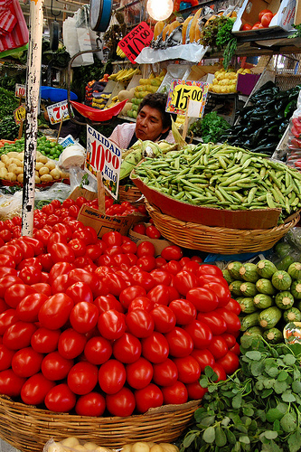
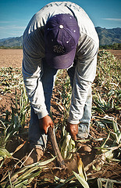

Alimentos orgánicos en México
Los alimentos orgánicos son aquellos productos que se producen bajo un conjunto de procedimientos denominados "orgánicos, biológicos o justificables". Estas prácticas tienen tres objetivos principales: la obtención de alimentos más saludables, un ingreso mayor para los agricultores y la protección del medio ambiente mediante el uso de técnicas no contaminantes, y que además reducen el uso de energía y de sustancias inorgánicas. Se prohíbe el uso de agroquímicos, la radiación y la siembra de transgénicos es decir productos que han sido modificados genéticamente.
La compra de productos orgánicos
Al comprar un alimento orgánico, el comprador-consumidor recibe un seguro de calidad del producto que lo obtiene por medio de un certificado de una agencia especializada: una Certificadora (OCIA, CERTIMEX, Naturland, etc.). En el caso de una compra local, un Comité de Certificación Participativa ofrece la garantía. Lo que quiere decir que el propio consumidor tiene la posibilidad de participar activamente en el Comité e inspeccionar con expertos lo que está comprando. La Ley de Productos Orgánicos de México que fue aprobada en febrero de 2006 apoya este proceso de garantía.
Los precios
Los productores orgánicos ocasionan costos mayores a los costos de la producción convencional debido a las técnicas aplicadas y la certificación. Por eso los alimentos orgánicos, por lo general, tienen un precio un poco más elevado. Pero, en el caso de la venta-compra local, los precios no solamente pueden ser los mismos que los precios de los productos convencionales, incluso pueden ser más bajos debido a la exclusión de los intermediarios o terceros.
Los mitos de México sobre productos orgánicos
El consumo de alimentos orgánicos se ha convertido en una tendencia creciente e irreversible en el mundo. Se estima que actualmente se gastan más de 30 mil millones de dólares en ellos y la demanda aumenta cada año por arriba de 30%. No obstante, México es conocido como país exportador de café y otros alimentos orgánicos producidos en el trópico. Una opinión ampliamente difundida es que los mexicanos no conocen los alimentos orgánicos o no quieren pagar un sobreprecio en reconocimiento de su calidad. Esta opinión es obsoleta y ha sido excedida por la realidad. En México ya existen diferentes opciones para adquirir esos productos orgánicos. Se pueden adquirir en mercados o a través de vendedores ambulantes de Oaxaca, Veracruz, Chapingo-Edomex, Tlaxcala, Jalisco, Chiapas, Querétaro o en tiendas especializadas en el D.F. y otras ciudades. El problema en México no es la falta de demanda, sino la falta de una amplia y diversificada oferta de productos orgánicos. Ya que el gobierno de México no incluye estos productos en la canasta de los productos básicos (por ejemplo tortillas, huevos, frijoles…) que los mexicanos compran a un precio moderado.
Otro mito muy difundido sobre la producción orgánica es que esta nueva forma de producir y consumir no va a permitir alimentar a una población en constante crecimiento. Así, también, la Secretaría de Agricultura de México está convencida que se necesitan transgénicos, fertilizantes químicos, pesticidas, etc. para aumentar la producción doméstica. Pero el problema para los campesinos y agricultores comerciales es que ese diseño es muy costoso, contamina el aire y el agua, y pone en riesgo la salud de los productores y consumidores. Es un diseño en el que las empresas transnacionales se benefician. Es por ello que la agricultura orgánica, y sobre todo su variante de producción-venta local, protege tanto a los productores como a los consumidores de las leyes de empresas transnacionales.
La realidad 
Científicamente ya está comprobado que la producción orgánica en países como México vale la pena. Sobre todo en los lugares donde hay condiciones agroecológicas difíciles para producir, donde predominan pequeños productores familiares y productores indígenas con un gran dominio de conocimientos y una buena organización. En estas condiciones es posible aumentar los rendimientos y la producción. Los resultados de los trabajos de campo del Cuerpo Académico en Orgánicos de la Universidad Autónoma Chapingo indican que los productores indígenas de café orgánico obtienen mayores rendimientos que sus colegas que trabajan en la producción convencional. Lo mismo sucede en maíz, cacao, mango, guayaba, etc. En fin, la producción orgánica tiene mucho potencial para reforzar la seguridad alimentaria de México. ¿Entonces, estamos preparados para un cambio de paradigma: tanto en la producción como en el consumo?